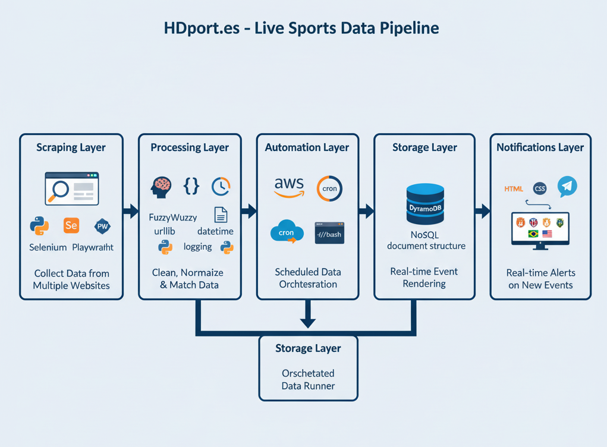

Proyectos
- Scraping: Python, Selenium, BeautifulSoup, Playwright
- Automatización: AWS EC2, ejecución programada vía cron / script bash
- Procesamiento: FuzzyWuzzy, JSON, urllib, datetime, logging
- Almacenamiento: AWS DynamoDB (estructura tipo documento)
- Frontend: HTML, CSS, JavaScript (dinámico y responsivo)
- Visualización: Datos renderizados en tiempo real con imágenes, banderas, logos y enlaces
- Notificaciones: Integración con Telegram para alertas en tiempo real
- Captura y procesamiento de datos deportivos desde más de 10 fuentes web distintas
- Normalización de datos y eliminación de duplicados usando algoritmos de similitud (fuzzy)
- Transformación del contenido en JSON para DynamoDB
- Visualización adaptable con logos, banderas, y enlaces filtrables
- Control de horarios según la zona horaria del usuario (con ajuste automático)
- Alertas automáticas en Telegram al detectar nuevos eventos
- Versión web responsiva, consumiendo directamente desde DynamoDB (JavaScript)
📡 Proyecto: Plataforma de eventos deportivos en vivo
Descripción general: Sistema completo de captura, procesamiento y visualización de eventos deportivos en vivo, desplegado en AWS y desarrollado con tecnologías serverless, web y automatización con Python.
